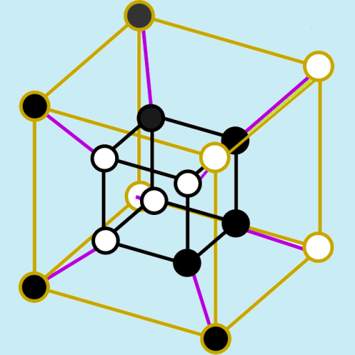

Renan Gross
Background
I am a postdoctoral researcher of mathematics at the University of Cambridge, hosted by Wendelin Werner.
Before that, I did a postdoc at Tel Aviv University with Asaf Nachmias (2023-2024).
Before that I completed my PhD in mathematics at the Weizmann Institute of Science, under the supervision of Ronen Eldan (2023).
Before that I completed my masters in mathematics at the Weizmann Institute of Science (2017).
Before that I completed my undergraduate degree in mathematics and physics at the Technion (2015).
Before that I studied in the Israel Arts and Science Academy high school (2008).
I am interested in graph theory, probability, combinatorics, their union and their intersection.
 The Boolean Zoo: This is a collaborative wiki whose purpose is to provide an extensive list of examples and counterexamples in Boolean function analysis. This is a (constant) work-in-progress; contributions are welcome!
Here is my blog. It contains expositions, technical explorations, random musings, and sometimes, plain nonsense.
Publications
| A sharp lower bound on the small eigenvalues of surfaces, R. Gross, Guy Lachman and Asaf Nachmias. arXiv 2024. |
| Randomly twisted hypercubes -- between structure and randomness, Itai Benjamini, Yotam Dikstein, R. Gross and Maksim Zhukovskii. arXiv 2022. |
Noise sensitivity from fractional query algorithms and the axis-aligned Laplacian, R. Gross.
arXiv 2022.
|
Brownian motion can feel the shape of a drum, R. Gross.
Stochastic Processes and their Applications 2023.
|
A phase diagram for bacterial swarming, Avraham Be'er, Bella Ilkanaiv, R. Gross, Daniel Kearns, Sebastian Heidenreich, Markus Bär and Gil Ariel.
Communication Physics 3, 66 (2020).
|
Concentration on the Boolean hypercube via pathwise stochastic analysis, Ronen Eldan and R. Gross.
Inventiones mathematicae 2022. Presented in STOC 2020.
|
A conformal Skorokhod embedding, R. Gross.
Electronic Communications in Probability Volume 24 (2019).
|
Decomposition of mean-field Gibbs distributions into product measures, Ronen Eldan and R. Gross.
Electronic Journal of Probability Volume 23 (2018).
|
| Exponential random graphs behave like mixtures of stochastic block models, Ronen Eldan and R. Gross. Annals of Applied Probability 2018, Vol. 28, No. 6, 3698-3735. |
Indistinguishable sceneries on the Boolean hypercube, R. Gross and Uri Grupel.
Combinatorics, Probability and Computing June 2018.
|
Quasispecies in population of compositional assemblies, R. Gross, Itzhak Fouxon, Doron Lancet and Omer Markovitch.
BMC Evolutionary Biology 2014 14:265.
|
Bounding the seed length of Miller and Shi's unbounded randomness expansion protocol, R. Gross and Scott Aaronson.
arXiv 2014.
|
Bridges, string art and Bèzier curves, R. Gross.
+plus magazine, 2012.
|
Summer School of Science
The Summer School of Science is an international summer science camp for high school students in Croatia. I have had the pleasure of leading a weeklong project there three times (1) (2) (3). This camp is a great opportunity for high-schoolers to do science and meet friends abroad, and I whole-heartidly recommend it.
A note on the images:
- The upper left image shows a self-avoiding walk. The image is taken from the wikimedia commons and was made by the user Rocchini.
- The upper right image shows the output of a bacteria-tracking program I wrote in collaboration with Avraham Be'er. He studies the collective motion of bacteria, and you can read more about this work here.
- The lower left image shows a tiger deformed by a (mostly) analytic complex function. You can read more about this here.
- The lower right image shows a planar Brownian motion hitting a closed curve. The x-position of the motion has the uniform distribution on [-1,1]. See here for more.
- The center image shows me, crudely pasted onto a background of critical hexagonal percolation. The thick bold curve denotes a crossing alongside open sites.

Background image from wikimedia commons by Erzbischof.
A very short biography
- 13.8 · 10-9 BC: Universe created
- 2005 - 2008: Israel Arts and Science Academy
- 2008 - 2012: IDF
- 2012 - 2015: The Technion
- 2015 - 2023: The Weizmann Institute of Science
- 2023 - 2024: Tel Aviv University
- 2024 - ...: University of Cambridge
This section is under construction.
Fun
- My blog.
-
I occasionally write and perform spoken word poetry. Here is my most popular piece amongst mathematicians:
A complete playlist can be found here.
- I've played the piano since I was 11. Here is a video of the "Phrase Inversal" quartet in the Technion, of which I was a part, playing the first movement of Mozart's g minor quartet:
Contact
- Email: It is an ancient and respected tradition, for academics to "obfuscate" their email address. I am happy to follow that tradition:
rg751 $you-know-the-sign$ cam.ac.uk